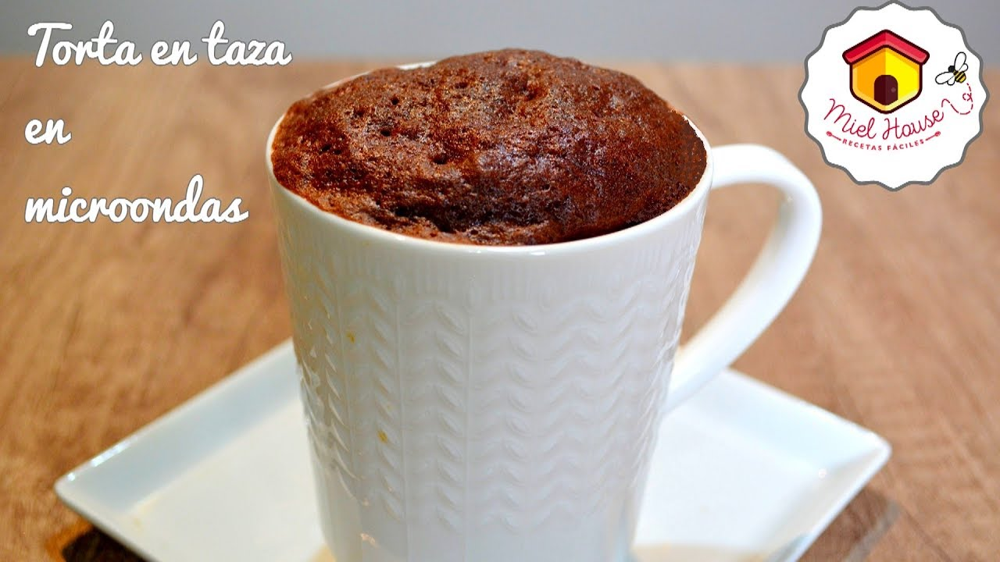
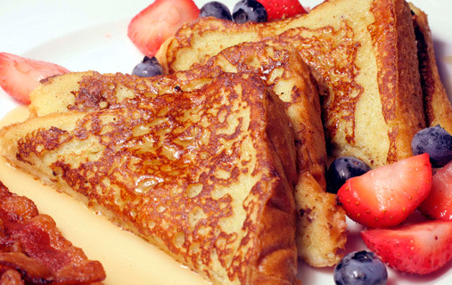

materiales:
taza harina leudante: 3 cucharadas cacao semi amargo: 1 cucharada azúcar: 2 cucharadas vainilla: 1/4 cucharadita aceite: 1 cucharada leches: 1 cucharada huevos: 1
una vez que hayas mezclado todo en tu taza lo metes al microondas durante 3 minutos pero cuidado debes preocuparte si esta completamente cocido
ingredientes
-6 rebanadas gruesas de pan duro o de molde -2 huevos -250 ml de leche -3 cucharadas de azúcar -canela en polvo -Mantequilla para freír -Una cucharadita de aromatizador de vainilla -Para acompañar: sirope, cremas, helado, rebanadas de fruta, crema de cacao.
en una taza mezcla la canela con los huevos, la leche y la vainilla
luego debes humedecer las revanadas de pan y en una sarte con mantequilla frielos hasta que creas conveniente
una vez listos bañalos con un poco de azucar o acompañalo con lo que te recomiendo en los ingredientes
